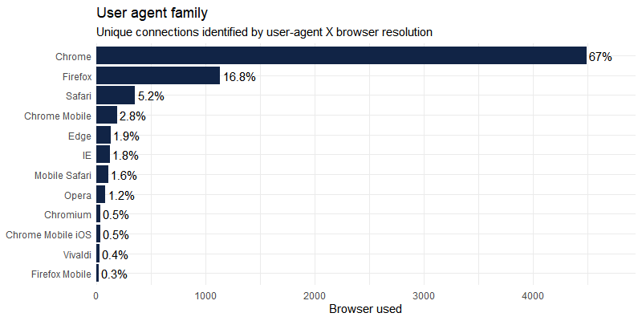

Logging tool for Shiny applications: record inputs or outputs changes, and infos about user’s session. All recording is done client-side to not slow down the application and occupy the server.
Installation
You can install the released version of shinylogs from CRAN with:
install.packages("shinylogs")And the development version from GitHub with:
# install.packages("remotes")
remotes::install_github("dreamRs/shinylogs")Usage
Call the main function track_usage in server part of application, and specify where to write logs:
library(shinylogs)
track_usage(storage_mode = store_json(path = "logs/"))The function will record :
- inputs : each time an input change, name, timestamp and value will be saved
- errors : errors propagated through outputs
- outputs : each time an output is re-generated
- session : informations about user’s browser and the application
See the vignette for more details (?vignette("shinylogs")) or the online version.
Examples
Some example of what is recorded with logs from applications available on our Shiny-Server: http://shinyapps.dreamrs.fr/
Number of connections per applications:

Number of connections over time :

Which tabs (from sidebar in {shinydashboard}) in shinyWidgets gallery are the most seen :

User-agent is recorded per connection and can be parsed with uaparserjs : (unique users are not registered as we use the open source version of shiny-server)

Development
This package use {packer} to manage JavaScript assets, see packer’s documentation for more.
Install nodes modules with:
packer::npm_install()Modify srcjs/exts/shinylogs.js, then run:
packer::bundle()Re-install R package and try track_usage() function.